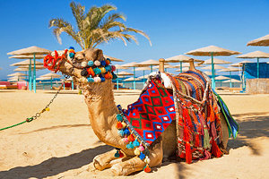
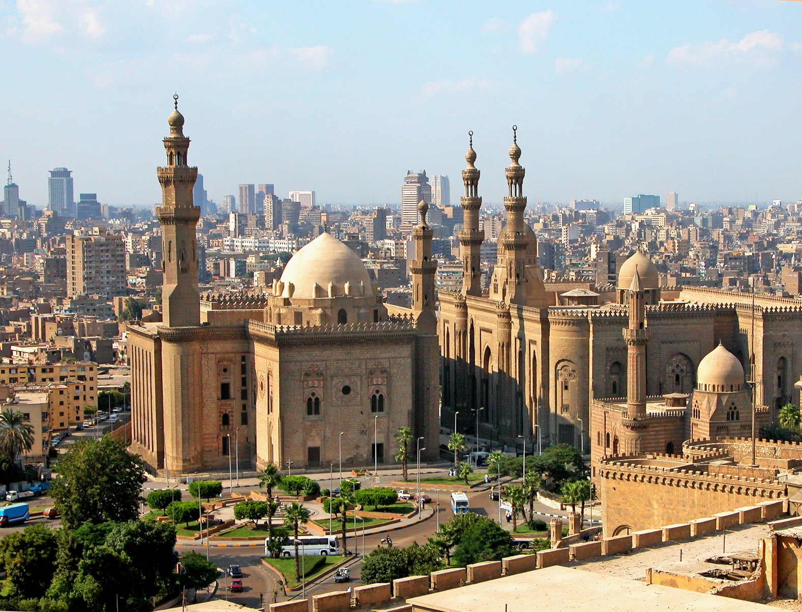
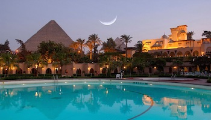

Cairo Tourist Profile:Jewel of the east, the capital of the Arab world, the city of the Thousand minaret, compelling the goat, the city that does not sleep... All titles refer to the city of Cairo, a veteran city, the birthplace of Pharaonic, Christian and Islamic civilization, known by ancient Egyptians in the name "fer" means the beautiful harbour, and they took the capital of the United Egypt on the hand of King Narmer, and the capital was also in the ages later in the Year 98 A.D., the fortress of Paplion, whose remains remains to be found, has been built in the vicinity of this fort, the city of the Palestinians, and the city of Fostat now is the area called Ancient Egypt, the rest of which is the famous mosque of Amr ibn al-AAs, and has The Fostat was annexed to three other cities on the hands of Jawhar al-Sably, which created the city of Cairo, the capital of the Fatimid state, in 969 A.D., and it was built by the mosque of Al Azhar, and included several expansions after that until it arrived for what it now has a total area estimated at 3084.676 km2. Cairo is the largest city of Egypt, Africa and the most populous, the joyful town that all the lovers of the world are looking for and in the interior of all governorates to move and stay. It embraces more than 20 million people in the total population of Egypt, the number that increases every minute and increases congestion, overcrowding and pressure on the state infrastructure, where the population density at the end of 2015 is about 15,000 people per square kilometre, which is scary for many visitors to traffic jam or a waiting queue in an institution or service center but fast what will be amazed for what they see in the eyes of their parents from kindness and in their treatment of generosity and in their faces from the thousand in Their language and their Egyptian words of humor! The Nile River is the lifeblood of all other governorates, one of the longest rivers in the world, and all visitors to Cairo Suto find out closely whether the independence of a sailboat or steamers to relax and enjoy a Nile tour away from the city noise, as well. You can practice a river sports or hunt, or sit in one of the many restaurants and cafes overlooking the Nile and enjoy with your favourite meal with a fresh breeze, or climb up the Cairo tower and enjoy a charming panoramic view of the height of 187 meters and also the pyramids Giza and the famous minarets of the Cairo mosques. The most prominent tourist destinations in the city of Cairo: O Ancient Egypt: The witness area on the ancient Cairo history, it was the home of the Islamic and Coptic Cairo the Fatimid, as well as the city of the old Fostat, have many of the effects of these different eras: Coptic Museum, the outstanding church, the Castle of Babylon, the Greek Church of St. George and other churches and synagogues as well as the mosque of Amr ibn al-AAs and the citadel of Salah al-Din Muhammad Ali and Sultan Hassan Mosque, Al-Azhar mosque, Al-Hussein Mosque, Zeinab and Jama Ahmed bin Toulon, one of the unique architectural models in Islamic history. o The Egyptian Museum: located in the heart of Cairo and specifically in Tahrir Square, Egypt's most famous and most famous museums in the world, featuring more than 150,000 archaeological pieces representing all stages of ancient Egyptian history. o The Pyramids of Giza: Although it occurred in Giza but not far from downtown Cairo, it is 18 kilometers away. Only from the Egyptian Museum, which will take about 30 minutes by car to get acquainted with one of the Seven Wonders of the world: the Three pyramids (Khafu, Khabr and Manding) and the Sphinx, not far from it, will find the pyramids of Dahshur and the pyramid of Zausser listed. o Recreational Venues: Cairo Tower: Located in the heart of Cairo on the island of Zamalek, which is about 186 metres high and was built from 1956 to 1961 in the form the Pharaonic Lotus flower, at the top, there is a luxurious, Roundabout tourist restaurant for its pioneers to enjoy sightseeing in Cairo from every direction. ? Parks & Cities Games: Zoo Giza: The largest zoo in Egypt and the Arab world and the oldest zoo in Africa, located on Charles de Gaulle Street in Giza and next to the Renaissance square where the famous statue of Egypt renaissance is located. With an area of about 80 acres opened in 1891, it has a wide range of animals, birds and reptiles. Frick Safari Park: An open forest on the Egypt-Alexandria Desert Road includes many animals and reptiles. Al-Azhar Park: Located 80 acres in the heart of ancient Cairo, one of the most beautiful Cairo gardens features its open green spaces overlooking ancient historical monuments of Egypt from each side like the castle and the mosque of the Sultan Hassan and a lot of minarets that adorn the western side of the garden, the Al Azhar Garden has 3 restaurants and a children's games area and is also located in the 12th-century-long, Salah al-Din city wall. Dreampark: A part of the city of Dreamland, located by the oases of 6th of October, has a variety of games that cater to young and old. Aqua Park: is one of the largest water sports cities in Egypt and the Middle East and has many swimming pools, slides and water toys and children's toys, located on the path of Egypt's Ismaili desert, likewise find crazy water in Sheikh Zayed. Climate in the city of Cairo: The spring (March and April) and autumn (September and October) are the most appropriate time to visit Cairo, where the average temperature is about 30 degrees Celsius (86 °f), either during the summer (May to August) the temperature at peak times may reach 43 °c! It drops in winter (December, January and February) up to 15 °c. Airports in Cairo: Cairo International Airport is the capital airport and the Egyptian air terminal and is the second largest airport in the continent of Africa in terms of the density of passenger numbers, far. |